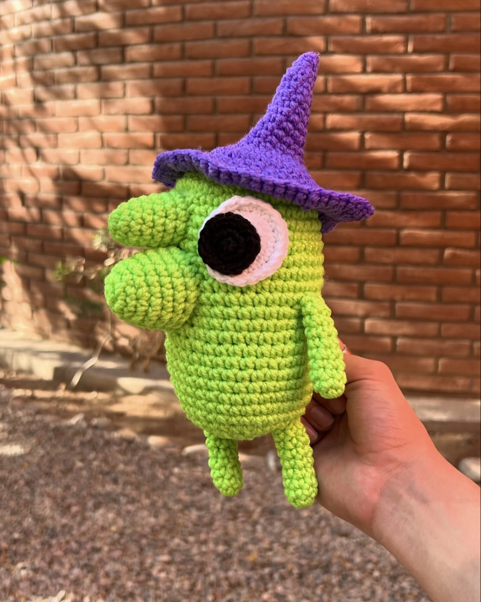
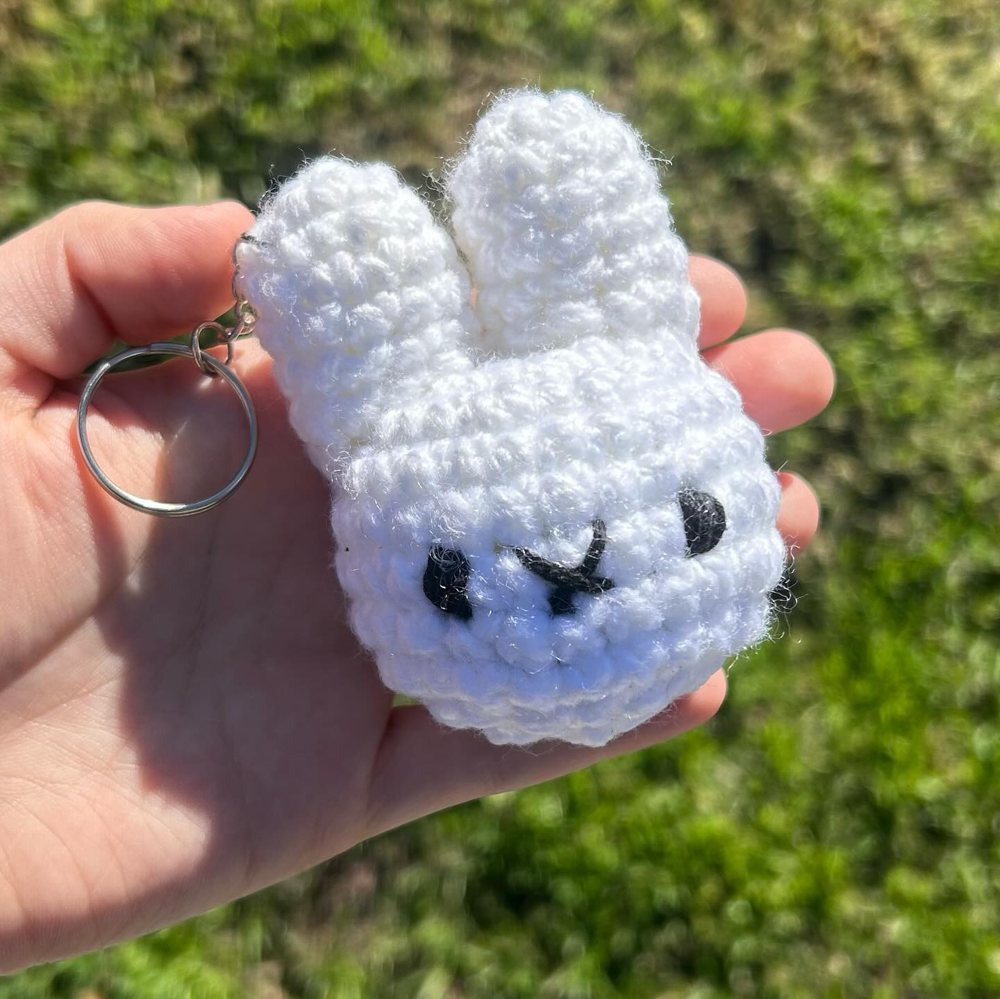
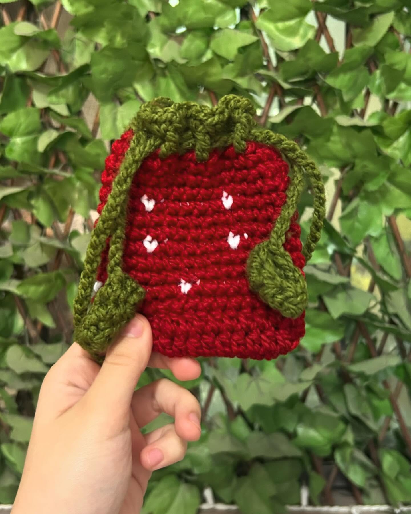
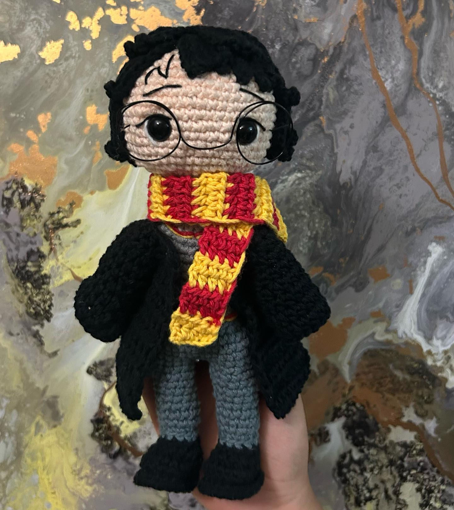
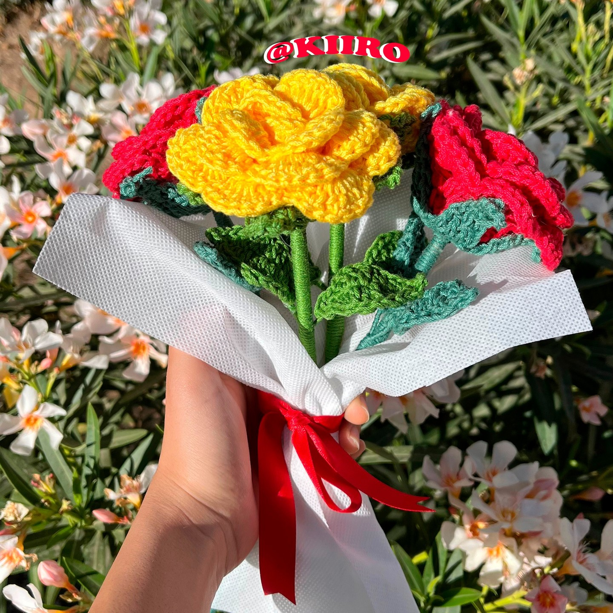

Amigurumi de Glep
Amigurumi de Glep, el caracterÃstico personaje de Smiling Friends. (の 3の)
Ver Más
Amigurumi de Cerdito con Traje de Fresa
Cerdito con traje de fresa tejido a crochet. 🐷🍓
Ver MásLlaveros de Hamsters Llorones
Llaveritos de hamsters llorones tejidos a crochet. 🐹🥺🎻
Ver Más
Conjunto Overol Para Bebé
Conjunto de overol y gorrito para bebé tejido a crochet. 🧸🍼
Ver Más





Amigurumi de Triceratops
Bonito amigurumi de triceratops con color personalizable. 🩷🦕
Ver MásRamo Personalizado
Ramo con diez fresas, un girasol y dos tulipanes, envuelto en pellón. ğŸ’
Ver Más
